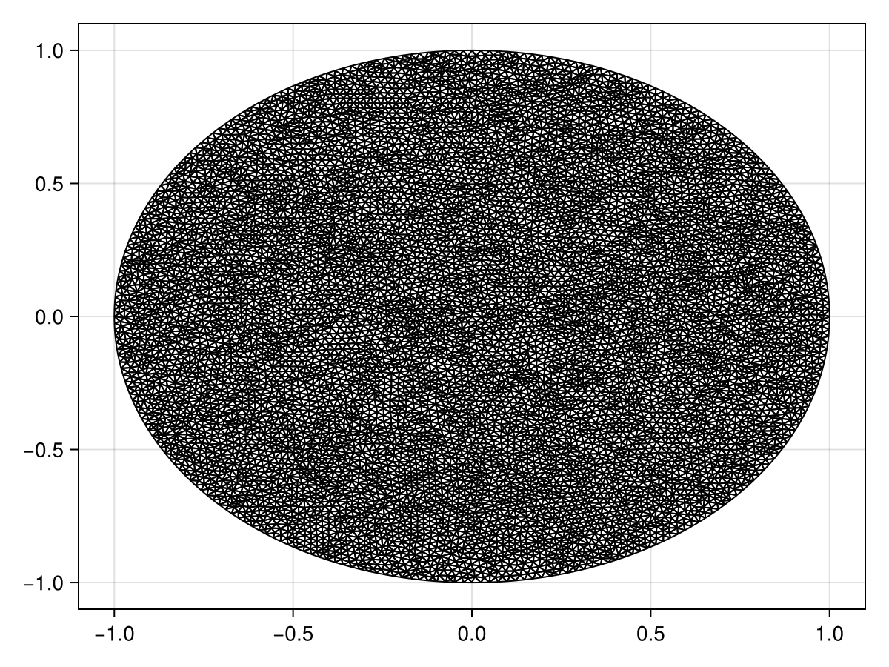

Reaction-Diffusion Equation with a Time-dependent Dirichlet Boundary Condition on a Disk
In this tutorial, we consider a reaction-diffusion equation on a disk with a boundary condition of the form $\mathrm du/\mathrm dt = u$:
\[\begin{equation*} \begin{aligned} \pdv{u(r, \theta, t)}{t} &= \div[u\grad u] + u(1-u) & 0<r<1,\,0<\theta<2\pi,\\[6pt] \dv{u(1, \theta, t)}{t} &= u(1,\theta,t) & 0<\theta<2\pi,\,t>0,\\[6pt] u(r,\theta,0) &= \sqrt{I_0(\sqrt{2}r)} & 0<r<1,\,0<\theta<2\pi, \end{aligned} \end{equation*}\]
where $I_0$ is the modified Bessel function of the first kind of order zero. For this problem the diffusion function is $D(\vb x, t, u) = u$ and the source function is $R(\vb x, t, u) = u(1-u)$, or equivalently the force function is
\[\vb q(\vb x, t, \alpha,\beta,\gamma) = \left(-\alpha(\alpha x + \beta y + \gamma), -\beta(\alpha x + \beta y + \gamma)\right)^{\mkern-1.5mu\mathsf{T}}.\]
As usual, we start by generating the mesh.
using FiniteVolumeMethod, DelaunayTriangulation, ElasticArrays
r = 1.0
circle = CircularArc((0.0, r), (0.0, r), (0.0, 0.0))
points = NTuple{2, Float64}[]
boundary_nodes = [circle]
tri = triangulate(points; boundary_nodes)
A = get_area(tri)
refine!(tri; max_area=1e-4A)
mesh = FVMGeometry(tri)FVMGeometry with 8872 control volumes, 17486 triangles, and 26357 edgesusing CairoMakie
triplot(tri)
Now we define the boundary conditions and the PDE.
using Bessels
BCs = BoundaryConditions(mesh, (x, y, t, u, p) -> u, Dudt)BoundaryConditions with 1 boundary condition with type Dudtf = (x, y) -> sqrt(besseli(0.0, sqrt(2) * sqrt(x^2 + y^2)))
D = (x, y, t, u, p) -> u
R = (x, y, t, u, p) -> u * (1 - u)
initial_condition = [f(x, y) for (x, y) in DelaunayTriangulation.each_point(tri)]
final_time = 0.10
prob = FVMProblem(mesh, BCs;
diffusion_function=D,
source_function=R,
final_time,
initial_condition)FVMProblem with 8872 nodes and time span (0.0, 0.1)We can now solve.
using OrdinaryDiffEq, LinearSolve
alg = FBDF(linsolve=UMFPACKFactorization(), autodiff=false)
sol = solve(prob, alg, saveat=0.01)retcode: Success
Interpolation: 1st order linear
t: 11-element Vector{Float64}:
0.0
0.01
0.02
0.03
0.04
0.05
0.06
0.07
0.08
0.09
0.1
u: 11-element Vector{Vector{Float64}}:
[1.2514323512504983, 1.2514323512504983, 1.2514323512504983, 1.2514323512504983, 1.2514323512504983, 1.2514323512504983, 1.2514323512504983, 1.2514323512504983, 1.0, 1.0732643239064652 … 1.1042904478816904, 1.0881826252544191, 1.1644440100218003, 1.086951026267742, 1.0392678506023625, 1.1024192941416517, 1.1031942000077788, 1.0375448554959907, 1.2101871199046064, 1.0285121494474723]
[1.2640100737981246, 1.2640100737981246, 1.2640100737981246, 1.2640100737981246, 1.2640100737981246, 1.2640100737981246, 1.2640100737981246, 1.2640100737981246, 1.0100731262262674, 1.0840425413616015 … 1.1153871767246, 1.0990874230507515, 1.1761490474404959, 1.0978597230123373, 1.049622487986911, 1.1134629699353544, 1.1142041917684318, 1.0479086637165471, 1.2223252656549588, 1.0388461319200424]
[1.27671337322395, 1.27671337322395, 1.27671337322395, 1.27671337322395, 1.27671337322395, 1.27671337322395, 1.27671337322395, 1.27671337322395, 1.0201630522435419, 1.0949614115035549 … 1.126595631801678, 1.1102130611727061, 1.187980992027336, 1.108928615155453, 1.0603884508547128, 1.1247417741894417, 1.1255825117115716, 1.0586091579477295, 1.2347026422168619, 1.0492989018529324]
[1.289547069559683, 1.289547069559683, 1.289547069559683, 1.289547069559683, 1.289547069559683, 1.289547069559683, 1.289547069559683, 1.289547069559683, 1.0302760390207508, 1.1060259230713487 … 1.1379099080192108, 1.1215477341376392, 1.199939651860608, 1.120148767766713, 1.0715385655214458, 1.1362403890444033, 1.1372959322022411, 1.069641072170222, 1.2473325120886165, 1.0598736896846344]
[1.3025106329079923, 1.3025106329079923, 1.3025106329079923, 1.3025106329079923, 1.3025106329079923, 1.3025106329079923, 1.3025106329079923, 1.3025106329079923, 1.0406892792348637, 1.1171091998664922 … 1.1493813316960395, 1.1327525387675192, 1.2120361442807177, 1.1314068585907162, 1.0820794782987129, 1.1475925237097693, 1.148580150021885, 1.0801679643365527, 1.259774166603946, 1.0705195242529346]
[1.3156017554068913, 1.3156017554068913, 1.3156017554068913, 1.3156017554068913, 1.3156017554068913, 1.3156017554068913, 1.3156017554068913, 1.3156017554068913, 1.0513704196510183, 1.1282776934255787 … 1.1609017610633978, 1.1438801235248106, 1.22412223753296, 1.142623392260597, 1.092283210635108, 1.1588294405193298, 1.1595065959406392, 1.0905707188211418, 1.2721275030747337, 1.0812393034289074]
[1.3288227635774819, 1.3288227635774819, 1.3288227635774819, 1.3288227635774819, 1.3288227635774819, 1.3288227635774819, 1.3288227635774819, 1.3288227635774819, 1.0620094702592076, 1.1396001037942873 … 1.1725563730400645, 1.1552957681215952, 1.2363867908649804, 1.1540551662190721, 1.1030545981891915, 1.1703818530350079, 1.1709648147344318, 1.1013964475166864, 1.2848105277289164, 1.0920929320948423]
[1.342176268447335, 1.342176268447335, 1.342176268447335, 1.342176268447335, 1.342176268447335, 1.342176268447335, 1.342176268447335, 1.342176268447335, 1.072623871782571, 1.1510670808831305 … 1.1843560296002624, 1.1669778561539135, 1.2488439767289918, 1.1657022191170454, 1.1143197242412421, 1.1822278777966813, 1.182906783403236, 1.112575422615248, 1.297799056736119, 1.1030795584088433]
[1.355664373838526, 1.355664373838526, 1.355664373838526, 1.355664373838526, 1.355664373838526, 1.355664373838526, 1.355664373838526, 1.355664373838526, 1.0833159981100613, 1.1626566474485662 … 1.1962767881223395, 1.1788062516084874, 1.2614401364852523, 1.177483857559879, 1.1257742775885533, 1.1942263621042783, 1.1950385247513045, 1.1239204314414413, 1.3109609781343028, 1.114181916474689]
[1.3692876607747921, 1.3692876607747921, 1.3692876607747921, 1.3692876607747921, 1.3692876607747921, 1.3692876607747921, 1.3692876607747921, 1.3692876607747921, 1.094147835954614, 1.174357726295971 … 1.20830072929222, 1.1907123012956433, 1.2741352461430875, 1.1893489921923375, 1.1372495808277974, 1.2062954292146117, 1.2071894632472813, 1.1353346959748296, 1.3242160485412249, 1.1253891842074863]
[1.383046423177356, 1.383046423177356, 1.383046423177356, 1.383046423177356, 1.383046423177356, 1.383046423177356, 1.383046423177356, 1.383046423177356, 1.1051773336414823, 1.186147688332236 … 1.2204406961871284, 1.2026387179037092, 1.286927906085255, 1.2012796233304464, 1.1485731620389852, 1.2183733594586021, 1.2192282435077293, 1.1466674459450001, 1.3374736841089452, 1.136692273875627]fig = Figure(fontsize=38)
for (i, j) in zip(1:3, (1, 6, 11))
ax = Axis(fig[1, i], width=600, height=600,
xlabel="x", ylabel="y",
title="t = $(sol.t[j])",
titlealign=:left)
tricontourf!(ax, tri, sol.u[j], levels=1:0.01:1.4, colormap=:matter)
tightlimits!(ax)
end
resize_to_layout!(fig)
figJust the code
An uncommented version of this example is given below. You can view the source code for this file here.
using FiniteVolumeMethod, DelaunayTriangulation, ElasticArrays
r = 1.0
circle = CircularArc((0.0, r), (0.0, r), (0.0, 0.0))
points = NTuple{2, Float64}[]
boundary_nodes = [circle]
tri = triangulate(points; boundary_nodes)
A = get_area(tri)
refine!(tri; max_area=1e-4A)
mesh = FVMGeometry(tri)
using CairoMakie
triplot(tri)
using Bessels
BCs = BoundaryConditions(mesh, (x, y, t, u, p) -> u, Dudt)
f = (x, y) -> sqrt(besseli(0.0, sqrt(2) * sqrt(x^2 + y^2)))
D = (x, y, t, u, p) -> u
R = (x, y, t, u, p) -> u * (1 - u)
initial_condition = [f(x, y) for (x, y) in DelaunayTriangulation.each_point(tri)]
final_time = 0.10
prob = FVMProblem(mesh, BCs;
diffusion_function=D,
source_function=R,
final_time,
initial_condition)
using OrdinaryDiffEq, LinearSolve
alg = FBDF(linsolve=UMFPACKFactorization(), autodiff=false)
sol = solve(prob, alg, saveat=0.01)
fig = Figure(fontsize=38)
for (i, j) in zip(1:3, (1, 6, 11))
ax = Axis(fig[1, i], width=600, height=600,
xlabel="x", ylabel="y",
title="t = $(sol.t[j])",
titlealign=:left)
tricontourf!(ax, tri, sol.u[j], levels=1:0.01:1.4, colormap=:matter)
tightlimits!(ax)
end
resize_to_layout!(fig)
figThis page was generated using Literate.jl.